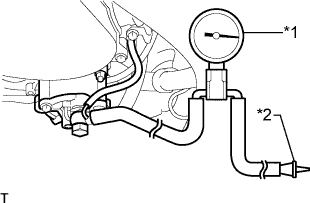

СИСТЕМА СНИЖЕНИЯ ТОКСИЧНОСТИ ОТРАБОТАВШИХ ГАЗОВ (для моделей без DPF) > ПРОВЕРКА БЕЗ СНЯТИЯ С АВТОМОБИЛЯ |
| 1. ПРОВЕРЬТЕ, НЕТ ЛИ УТЕЧЕК |
Осмотрите шланги, разъемы и прокладки и убедитесь в отсутствии трещин, утечек и повреждений.
| 2. ПРОВЕРЬТЕ ВАКУУМНЫЙ НАСОС В СБОРЕ |
|  |
Отсоедините вакуумный шланг от вакуумного насоса.
Подсоедините шланг датчика разрежения к насосу.
| *1 | Датчик разрежения |
| *2 | Пробка |
Вставьте пробку в другой шланг датчика.
Запустите двигатель и прогрейте его в течение не менее 2 минут.
Измерьте отрицательное давление насоса на холостом ходу двигателя.
Снимите датчик с насоса.
Подсоедините шланг к насосу с помощью фиксатора.